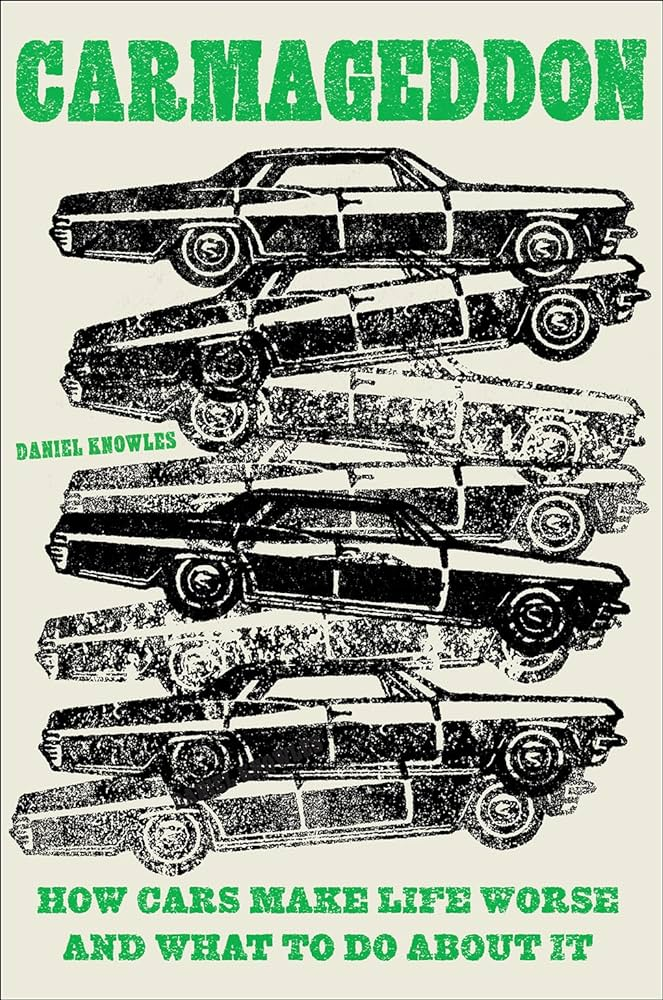

Book Review: Carmageddon
Rating: 9/10
Overview: Examines cars’ impact on society, illustrating the negative effects of car culture and challenging its dominance.

Introduction
In his compelling and thought-provoking book, Carmageddon: How Cars Make Life Worse and What to Do About It, Daniel Knowles invites readers to reconsider the pervasive dominance of automobiles in modern society. Through sharp analysis and persuasive arguments, Knowles explores the multifaceted ways in which car culture adversely affects our daily lives. Below, I share some of the insights and reflections that resonated with me long after turning the last page.
Civil Rights and Public Transportation
The automotive industry’s exponential growth coincided with the era when people of color finally gained the right to sit anywhere on public transportation. This pivotal moment in civil rights history marks a complex intersection with the rise of car culture.
In the United States, the expansion of roads and highways was strategically planned in ways that often had deleterious effects on certain communities. These construction projects were intentionally routed to displace specific groups or sever their access to vital city resources, exacerbating social and economic divides.
Displacement due to these infrastructure projects frequently forced communities into areas lacking in essential public transportation services. This not only marginalized these groups further but also entrenched car dependency as a primary mode of mobility, despite its broader societal impacts.
The Albina Vision Trust in Portland is an exemplary organization actively working to address and rectify transportation policies, among other institutional decisions, that have historically led to the displacement of hundreds of families. Their efforts highlight a crucial movement towards reconciling past injustices with forward-thinking urban and transportation planning.
Cars and Classism
Cars since their origination have been a sign of the upper class. Even today you are seen as “less” if you do not own a car.
A lot of jobs require people to have a drivers license or “valid form of transportation”, which means driving. Even though there are plenty of valid forms of transportation that are not driving.
On Class, Capitalism and Urban Planning in Who Framed Roger Rabbit , delves into an intriguing analysis of the film, which is based on the true story of the dismantling of trolley systems across the United States. It offers a compelling look at how the movie intertwines the narratives of class, capitalism, and urban planning, highlighting the profound impact of the automobile industry’s rise on public transit and, by extension, society at large.
In Kenneth Grahame’s classic novel, The Wind in the Willows, the character of Mr. Toad epitomizes the reckless and inconsiderate motorist, reflecting critiques of upper-class driving behaviors. For an intriguing dive into the real-world inspiration behind this memorable character, explore the article: Meet the Real-Life Inspiration Behind “Mr.Toad”.
Parking
Society’s preference for free parking over affordable housing is starkly evident in the increasing number of individuals living out of RVs and cars. This phenomenon highlights a troubling reality: in many areas, it’s more financially feasible to secure a parking spot for a vehicle than to afford living accommodations.
Urban planning regulations often mandate a disproportionate allocation of parking spaces relative to the square footage of buildings, irrespective of the practical need for such extensive parking. This is particularly illogical for certain types of establishments, such as bars, where the excessive requirement for parking does not align with the nature of the business.
The prioritization of free parking spaces over the availability of public bathrooms underscores a misalignment in urban development priorities, where the convenience of car owners is often placed above basic public amenities.
Idealized representations of car-centric cities frequently omit the extensive infrastructure devoted to parking. These depictions fail to acknowledge the visual, spatial, and environmental impact of parking lots and garages, presenting an unrealistically clean and uncluttered urban landscape.
The mandated quantity of parking in urban areas contributes to sprawling city layouts, with destinations spaced too far apart for practical walking. This sprawling effect contradicts one of the fundamental advantages of city living: the ability to navigate the urban environment on foot. By encouraging car dependency, current parking requirements undermine the walkability and, ultimately, the very essence of city life.
Traffic
Traffic congestion is inherently linked to the prevalence of cars. The solution to reducing traffic lies not in expanding road networks but in decreasing car usage.
A shift towards public transportation, coupled with investments in its infrastructure, could significantly alleviate traffic congestion. Prioritizing transit development over the construction of more roads offers a sustainable path to reducing urban traffic.
The average driver spends a considerable amount of time stuck in traffic, a reality conspicuously absent from car advertisements. These commercials often portray an idealized driving experience, sidestepping the common frustration of traffic jams that many drivers face daily.
The Lethal Impact of Some Vehicles
Cars are usually designed to keep you safe in crashes. They have special features like engines that drop down and fronts that crumple to absorb crash impacts, protecting the people inside. But, there’s a big problem with large, lifted trucks and vans. Their height means they often skip right over those safety features in smaller cars. Instead of the front crumpling and absorbing the crash, these big vehicles can crash directly into where passengers sit, causing much worse injuries, and fatalities.
Car manufacturers are aware that these big trucks and vans are more dangerous in accidents. Still, they keep selling them because they’re profitable, not just the vehicles themselves but also all the extra accessories they can sell.
Choosing one of these big vehicles might feel safer because they’re so sturdy and high off the ground. But the truth is, they turn accidents into much more dangerous situations.
Charity Car Clubs: A Strategic Image Shift
Aware of their controversial impact, car manufacturers have sought to align themselves with the emblematic “American Dream.” To cultivate a positive public image, they’ve initiated charity car clubs. These initiatives gather car owners to engage in charitable activities, all under the auspices of the car company’s brand.
This strategy is designed to forge a strong association between car ownership and membership in a commendable community. It intentionally crafts the narrative that owning a car from a particular brand elevates one’s social standing, embedding the vehicle not just as a means of transport but as a symbol of belonging to a virtuous circle.
Vehicles in Developing Nations
The United States, along with other developed nations, enforces rigorous environmental and safety standards for vehicles. Consequently, cars that no longer comply with these stringent regulations in their home countries are often exported to developing nations.
The implementation of import regulations on vehicles by developing countries can inadvertently widen the socioeconomic divide. Such policies may restrict access to affordable transportation for lower-income segments, exacerbating the gap between different social classes.
Car Corporations and Public Health
The Volkswagen emissions scandal revealed the company cheated on emissions tests, significantly impacting environmental and public health standards.
Studies indicate lead from gasoline significantly impaired the IQ of nearly half the U.S. population. The elimination of leaded gasoline has been a critical step in removing a major public health threat, marking a pivotal victory against environmental pollution caused by automotive fuels.
Limitations of Electric Cars
In cities where the electrical grid relies on coal for power, the environmental benefits of electric cars are negated. The reliance on fossil fuels for electricity generation means that even zero-emission vehicles indirectly contribute to pollution.
The production of electric car batteries involves extensive mining operations due to their large size compared to smartphone batteries. This increased demand for raw materials significantly exacerbates the environmental impact associated with their extraction and processing.
Investments in infrastructure projects like the Las Vegas Convention Center Loop a one-way, one-lane tunnel that permits only a single car at a time, represents a questionable allocation of resources. This system pales in comparison to traditional subway systems, which offer higher capacity, efficiency, and speed at lower costs.
Gender Bias in Transporation
Public transportation systems often overlook the needs of women, despite their higher usage rates compared to men.
Mothers, in particular, face challenges when navigating buses or trains with children, highlighting a lack of family-friendly amenities.
The design and routing of many public transit options cater predominantly to the conventional nine-to-five work commute, neglecting the complex daily routines of individuals like stay-at-home moms who juggle school drop-offs, grocery shopping, and other errands.
Historically, crash test dummies were based on male body types, leading to vehicle safety features that are more optimized for men than for women.
Child safety in vehicles largely falls to parents, as standard car seat designs cater to adults, not children, necessitating additional child-specific safety equipment.
Walkable Cities
Walkable cities emphasize pedestrian access, fostering healthier lifestyles by minimizing dependence on cars.
Shifting towards these urban designs offers notable environmental advantages, such as diminished air pollution and reduced greenhouse gas emissions.
Notable examples include quaint college towns and places like Disney World’s Epcot, designed for easy pedestrian navigation across areas. Unlike the sprawling urban developments of today, these examples showcase the practicality and appeal of compact, walkable communities, underscoring the need for a return to more human-scale urban planning.
Conlusion
In “Carmageddon: How Cars Make Life Worse and What to Do About It,” Daniel Knowles navigates the intricate ways in which automobile dominance shapes modern society, spotlighting its profound impact on everything from civil rights and classism to urban planning and public health.